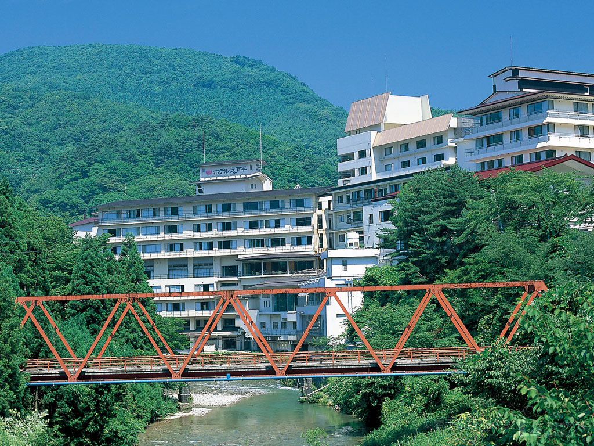
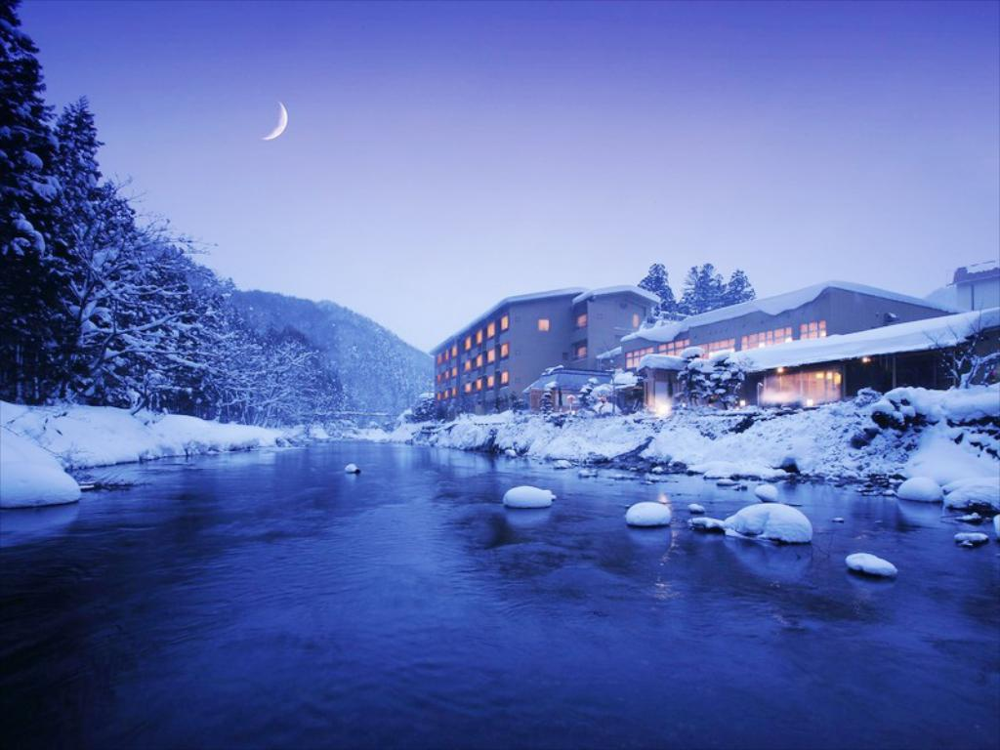

志戸平温泉


花巻温泉郷の中でも、名湯秘湯が集中する豊沢川流域入口に位置する温泉地。清流を
見下ろす渓谷の立地に、大型ホテル、高級旅館とそれぞれ趣きが異なる2軒の湯宿が立ち
並ぶ。古くから山あいの閑静な湯治場として知られてきたが、現在は様々なレジャーを
楽しめる。湯浴みをすれば、眼の前には四季折々の渓谷美がパノラマのように雄大に広がる。
観光情報
ジャンル
温泉・宿
所在地
岩手県花巻市湯口志戸平２７－１
電話番号
0193-25-2011
[アクセス経路]
盛岡IC → 【車35分】温泉
盛岡駅 → 【電車70分】温泉